Warning : some parts can be obsolete
Az első dokumentum fordítása előtt be kell állítania a szerkesztő karakterkódolását ("Texmaker beállítása" -> "Szerkesztő" -> "Szerkesztő karakterkódolása"). Ezután ennek megfelelő karakterkódolást kell használnia a dokumentum preambulumában (például: \usepackage[latin1]{inputenc}, ha az "ISO-8859-1" kódolást választotta a szerkesztőben).
Megjegyzés: egy fájl megnyitásakor figyelmeztetést kap, ha a dokumentumot nem sikerül helyesen dekódolni az alapértelmezett kódolási beállítással. Ekkor egy másik kódolás kiválasztására van lehetősége (az alapértelmezett karakterkódolás változatlan marad).
A Texmaker nem tudja lefordítani a dokumentumot, ha a LaTeX-függő parancsok elérési útvonalai hibásak.
Az alapértelmezett beállítások a legutóbbi standard LaTeX disztribúcióknál működnek, de lehetséges, hogy módosítania kell azokat ("Texmaker beállítása" -> "Parancsok").
Egy parancs megváltoztatásához kattintson az adott sor végén lévő gombra és válassza ki a parancsot a böngészőből: a Texmaker automatikusan alkalmazkodni fog a parancs szintaxisához.
A % karakter a kiterjesztés nélküli fájlnevet helyettesíti, a @ karakter pedig a sorok számát jelöli.
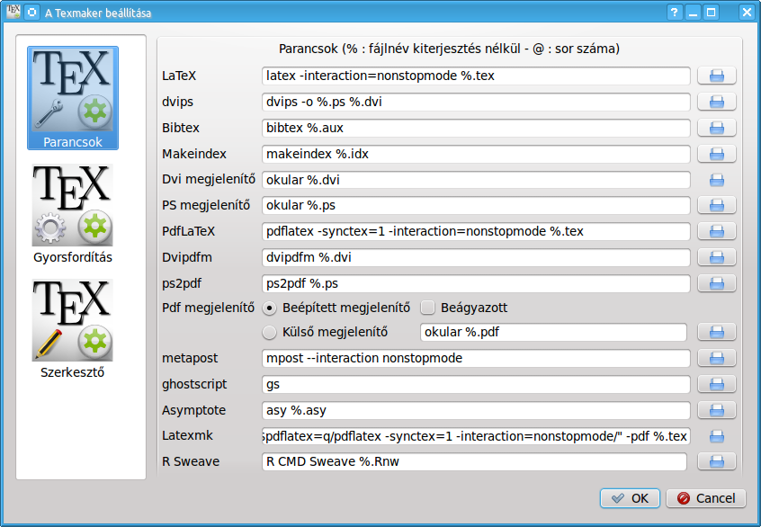
A helyesírás-ellenőrzés az OpenOffice.org (2.x verzió) szótárait használja. Jelenleg a GPL francia, angol, német, spanyol, olasz, holand és magyar szótárak települnek a Texmakerrel.
Más szótárakat innen tölthet le: http://wiki.services.openoffice.org/wiki/Dictionaries
A helyesírás-ellenőrzés beállításához: "Texmaker beállítása" -> "Szerkesztő" -> "Helyesírás szótára" -> kattintson a sor végén található gombra és válassza ki a szótárt a böngészőből.
Figyelmeztetés: a helyesírás-ellenőrzés a kurzornál kezdődik, nem pedig a dokumentum elején.
Gépelés közben piros hullámvonal jelöli a helytelenül írt szót. Jobb gombbal kattintva egy helyi menüben néhány javaslat jelenik meg. A használni kívánt szóra kattintva végezheti el a cserét.
A standard parancsok (kivágás, másolás, keresés...) a "Szerkesztés" menüben és a "Szerkesztés" eszköztáron találhatók.
Egy dokumentum preambulumának beállításához használhatja a "Gyorsindítás" varázslót ("Varázsló" menü).
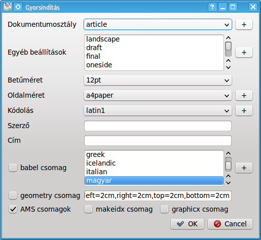
Ezen a párbeszédpanelen állíthatja be a dokumentum legfontosabb jellemzőit (osztály, papírméret, kódolás...).
Megjegyzés: Más lehetőségeket is hozzáadhat a "+" gombra kattintva. Minden beállítása rögzítésre kerül.
Saját preambulum modelljét is beírhatja a szerkesztőbe: a "Másolás/Beillesztés" vagy a "Mentés másként" parancsokkal egy új dokumentumhoz is használhatja majd.
Új szakasz megadásához (fejezet, alfejezet...) használja ezt a legördülő menüt az eszköztáron:
A felugró ablakban kiválaszthatja a szakasz stílusát (fejezet, alfejezet...).
Megjegyzés: a "Szerkezet" nézet automatikusan frissül.
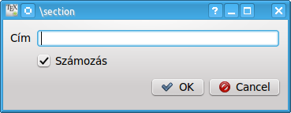
A "Szerkezet" nézet (bal panel) lehetővé teszi a dokumentum bármely szakaszának gyors elérését. Tetszőleges elemre kattintva (címke, fejezet...) az adott rész kezdetéhez ugorhat a szerkesztőben.
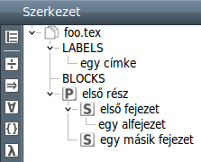
A "Szerkezet" nézet automatikusan frissül gépelés közben, de bármikor használhatja a "Szerkezet frissítése" parancsot a "Szerkesztés" menüben.
Minden egyes fájl esetén három könyvjelző segíti a gyors navigációt: kattintson a sor száma elé egy könyvjelző hozzáadásához vagy eltávolításához. Mindhárom könyvjelző beállítása esetén újabbat csak valamely előzőleg beállított könyvjelző eltávolításával hozhat létre. Az adott sorba ugráshoz kattintson az "1", "2" vagy "3" gombra az állapotsoron.
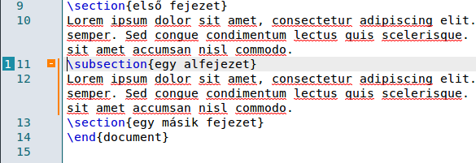
Egyszerűen formázhatja a szöveg részeit a következőkkel:
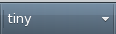
További lehetőség: a kiválasztott szöveg közvetlenül környezetbe foglalható. Például: a "Hello" szó kiválasztása után a "Félkövér" gombra kattintva az alábbi kódot kapja: \textbf{Hello}.
Ez a lehetőség a "LaTeX" menü minden "[selection]" jelzéssel ellátott környezetére fennáll.
Az általános "térköz" parancsok a "LaTeX" és a "Matematika" menükben találhatók. Az "új sor" LaTeX parancs gyors beillesztéséhez használhatja a kapcsolódó parancsot az eszköztáron (gyorsbillentyű: Ctrl+Alt+Return).
A lista környezet általános kódjai könnyen beszúrhatók a "LaTeX -> Listakörnyezet" menüből.
Megjegyzés: az \item parancs gyorsbillentyűje: Ctrl+Shift+I.
Táblázat beillesztéséhez használhatja a "Varzsló" menü "Táblázat varázsló" parancsát:
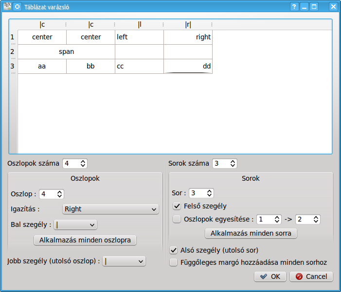
Könnyen beállíthatja a táblázat legfőbb tulajdonságait.
Megjegyzés: az ablakban lehetőség van a kódokat közvetlenül a cellába gépelni.
A megfelelő LaTeX kódok automatikusan kerülnek a szerkesztőbe.
Tabulátoros környezet beszúrásához használhatja a "Varázsló" menü "Tabulátor varázsló" parancsát:
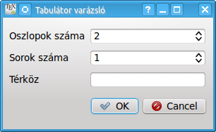
Kép beillesztéséhez használja a "LaTeX" menü "\includegraphics" parancsát. A megjelenő ablakban kattintson a mappa ikonra és válassza ki a képet.
Megjegyzés: a "+" gombra kattintva feliratot adhat a képhez.
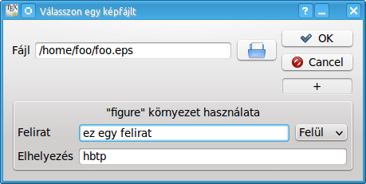
Az eszköztár ezen legördülő menüjével gyorsan szúrhat be címkét, hivatkozást, idézést, lábjegyzetet a forráskódba.
Megjegyzés: a dokumentumban használt címkék megjelennek a "Szerkezet" nézetben.
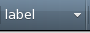
További lehetőség: a \ref parancs esetén egy felbukkanó ablakban közvetlenül kiválaszthatja a címkét.
Szövegközi matematikai módba váltáshoz nyomja meg az eszköztár "$$" gombját (gyorsbillentyű Ctrl+Shift+M) vagy használja a "Matematika" menü kapcsolódó parancsát. A kiemelt matematikai mód gyorsbillentyűje: Alt+Shift+M.
A "Matematika" eszköztárból beszúrhatja a leggyakoribb matematikai formulákat (tört, gyök...):
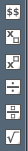
A "Szerkezet" nézet "szimbólumok" panelje segítségével mintegy 400 matematikai szimbólumot, valamint \left és \right tagot illeszthet a dokumentumba (kattintson a szimbólumokra a lehetőségek megtekintéséhez).
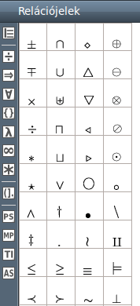
További lehetőség: A "Kedvenc szimbólumok" (*) panelen összegyűjtheti saját kedvenc szimbólumait.
Matematikai szövegét a "Matematika" menü elemeivel formázhatja.
A tömbszerű környezetekhez használhatja a "Varázsló" menü "Tömb varázsló" parancsát. Ezzel a varázslóval az array, matrix, pmatrix... környezeteket hozhatja létre. A cellák közvetlenül szerkeszthetők.
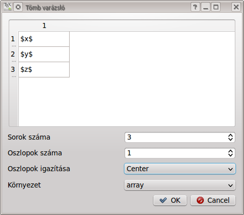
Egyes texmaker parancsok helykitöltőket "•" szúrnak be, hogy megkönnyítsék a létrehozott parancs következő argumentumára ugrást a "Tab" billentyű használatával. (a "Shift+Tab" billentyűkombinációval visszafelé halad).
Megjegyzés: ha a sor helykitöltőt "•" tartalmaz, A "Tab" billentyű nem használható tabulátor beszúrására.
Egy dokumentum fordításának legegyszerűbb módja a "Gyorsfordítás" használata. A "Gyorsfordítás" parancsainak sorrendjét a "Texmaker beállítása" párbeszédpanelen adhatja meg.
Parancs futtatása az eszköztárról: először válassza ki a parancsot, majd kattintson a "Futtatás" gombra.
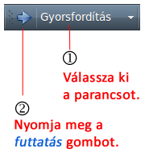
A parancsokat egyesével is futtathatja (gyorsbillentyűk: F2...F12 - lásd az "Eszközök" menüben).
Megjegyzés:
Az "Eszközök" menü "Takarítás" parancsa törli a LaTeX fordítás során keletkezett fáljokat (dvi, toc, aux...), kivéve a ps és pdf fájlokat.
Figyelmeztetés: Minden fájlnak kiterjesztése kell, hogy legyen és nem fordíthat névtelen vagy a fájlnévben szóközt tartalmazó dokumentumot.
A "Gyorsfordítás" parancs használatakor a naplófájl automatikusan megjelenik az "Üzenetek/Naplófájl" panelen. A "Sor" oszlop egy cellájára kattintva a kurzor a szerkesztőben a kapcsolódó sorba ugrik és megjeleníti a hibát.
Megjegyzés: A latex hibák és figyelmeztetések összefoglalója a teljes naplófájl előtt látható.
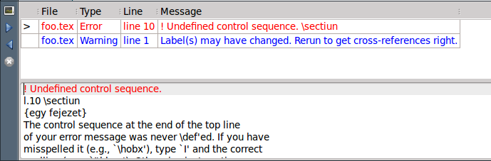
A "Következő LaTeX hiba" és az "Előző LaTeX hiba" parancsokkal a fordítás során felismert hibák között lehet tallózni:
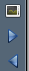
Ha a pdflatex parancsot kiegészíti a "-synctex=1" kapcsolóval, a beépített pdf megjelenítő a (La)TeX forrásfájl kurzorának megfelelő helyre ugrik a PDF fájlban.
Fordítva, ha a beépített pdf megjelenítőben jobb gombbal kattint egy szóra, a felbukkanó helyi menüből a forrásfájl kapcsolódó sorába ugorhat a szerkesztőben.
Megjegyzés: A beépített pdf megjelenítőben a Ctrl+szóköz billentyűkombinációt (ctrl+$ a MacOsX-ban) használva a fókusz a szerkesztőablakra kerül.
A xelatex használatához helyettesítse a pdflatex parancsot a xelatex-hel.
A Texmakerben lehetőség van minden \part, \chapter, \section,..., valamint \begin{...} \end{...} blokk összecsukására és kibontására. Vigye a kurzort a blokk első sorába, majd kattintson a sor mellett megjelenő, narancssárga "-" gombra.
Megjegyzés: A helyi menüt is használhatja a blokk végére ugráshoz ("Ugrás a blokk végére" parancs).
A Texmakerrel lehetősége nyílik a több fájlból álló dokumentumok szerkesztésére.
TeX fájlt a "LaTeX" menü "\include{file}" paranccsal illeszthet dokumentumába. A fájl megjelenik a "Szerkezet" nézetben is. A fájlnévre kattitva a Texmaker megnyitja azt.
Ezután beállíthatja "fődokumentumát" a "Beállítások" menüben. Az "Eszközök" menü parancsai csak erre a dokumentumra hatnak majd, még akkor is, ha az "aldokumentumokat" szerkeszti (akár be is zárhatja a fődokumentumot).
Könnyen válthat a fődokumentum és a jelenlegi dokumentum között az erre szolgáló gombbal (a "Félkövér" gomb fölött).
Megjegyzés: a "Beállítások" menüben visszaválthat a normál módra.
Egy .tex dokumentum megnyitásakor a talált .bib fájlok automatikusan feldolgozásra kerülnek és az irodalomjegyzék hivatkozásai hozzáadódnak az automatikus kiegészítéshez. Az irodalomjegyzék hivatkozásainak listája a "Szerkesztés" menü "Irodalomjegyzék frissítése" parancsával is frissíthető.
A .bib fájlok szerkesztésekor a "Bibliográfia" menüből beillesztheti az adott stílushoz tartozó bejegyzés kódját a dokumentumba.
Megjegyzés: a nem kötelező mezőket törölheti a "Bibliográfia" menü "Takarítás" parancsával.
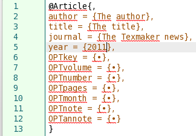
A Texmakerben lehetőség van személyes sablonok használatára (gyorsbillentyűk: Shift+F1...Shift+F10). A sablonok testreszabásához kattintson a "Felhasználó" menü "Felhasználói sablonok" elemének "Felhasználói sablonok szerkesztése" parancsára.
Megjegyzések:
Saját parancsokat is definiálhat (gyorsbillentyűk: Alt+Shift+F1...Alt+Shift+F5) a "Felhasználó" menü "Felhasználói parancsok" elemének "Felhasználói parancsok szerkesztése" parancsára kattintva. Az itt definiált parancsokat az eszköztár "Futtatás" gombjával futtathatja.
A legfontosabb Pstricks/Metapost/Tikz/Asymptote parancsok a "Szerkezet" nézet "PS", "MP", "TI" és "AS" gombjai alatt kaptak helyet.
Az "mpost" és "asy" parancsokat az "Eszközök" menüből vagy az eszköztár "Futtatás" gombjával futtathatja.
Ha az éppen nyitott fájlok bezárása nélkül lép ki a programból, a Texmaker automatikusan megjegyzi ezen dokumentumok nevét. A "Fájl" menü "Előző munkamenet helyreállítása" parancsával egy kattintással megnyithatja ezeket a fájlokat.
Néhány dvi megjelenítő a forrásfájl adott sorának megfelelő sorhoz tud ugrani (és azt kiemelni) a DVI fájlban. Ehhez használja a @ karaktert a dvi megjelenítő parancsában (a "Texmaker beállítása" menü "Parancsok" fülén).
Példák:
texmaker file [-master] [-line xx]
A "-master" kapcsolóval a dokumentum automatikusan fődokumentumként lesz beállítva.
A "-line xx" kapcsolóval a Texmaker megkérdezi, hogy a dokumentum betöltése után az xx sorhoz kíván-e ugrani.
Alapértelmezett gyorsbillentyűk (*: módosítható a "Texmaker beállítása" -> "Szerkesztő" fülön) :